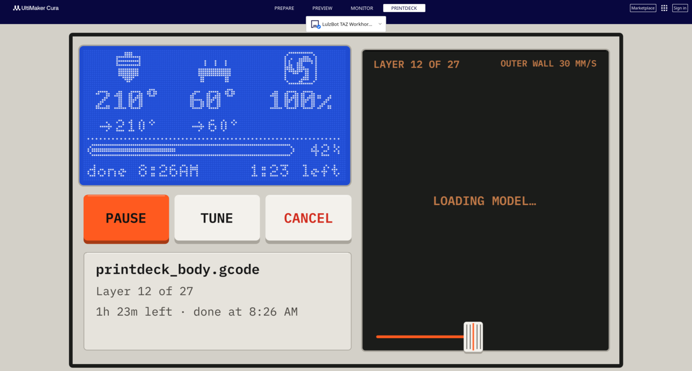

Software
The Cura plugin
Cura follows the roll in the deck, shows the deck in a tab, and prints on a part that is printed already.

The booklet of the plugin has the setup and each feature, with pictures: on the web, or docs/cura/printdeck-cura.pdf.
The plugin connects Cura to the Printdeck through the printer of the OctoPrint connection plugin. It uses the same address and API key, so it needs no setup.
The plugin works by itself, and tells you in a message what it did:
- The print button says "Print to Printdeck".
- When the roll in the Printdeck changes, Cura changes to the material of the roll.
- After a slice, Cura warns when the model needs more filament than the roll has.
- A card next to the slice button shows the roll in the Printdeck: its color, its name, and the filament that is left on it. After a slice, the card shows the filament of the model, and the filament that is left after the print.
- During a print of the file that Cura has open, the Preview shows the layer that prints.
- When a print ends, Cura tells you.
- The Printdeck tab, next to Monitor, shows the screen of the deck, the print and the time left, the roll and its grams, and the keys Pause, Resume and Cancel, in the style of the deck.
- When Cura starts during a print, it offers to show the print in the Preview: it downloads the file from the Printdeck, and the Preview follows the layer that prints.
- Each file that Cura sends has the material of Cura in its header. Before the Printdeck prints a file for another material, it asks on the touch screen.
The OctoPrint connection plugin also shows the screen of the Printdeck in the Monitor tab, in place of a camera.
Print on a part
The Print on a part tool (the left toolbar of Prepare) prints new models on a part that is printed already, for example a logo in another color on a lid. The part goes into a pocket on the bed, so its place is exact, and the deck checks its height with a paper test.
- Open the part and the new models. Lay the part on the bed with its face for the new models up, away from the front and the left edge (the start of the print primes there).
- Select the part, and tap Set as base. Cura does not print it, and puts no support in it. The tool adds the pocket: a low wall around the part, with open corners.
- Select a new model, and tap Place on the base. It goes to the top of the part and stays at that height. Move it on the face as usual. To print into a pocket of the part, lower it with the Z of the Move tool. When the part and the new models come from one assembly (files in one frame), select the new models and tap Place as in the files: they go to their exact place on the part, also after you turned the part. For lettering, type the text, its size and how high it stands, and tap Add text. The text goes on the top of the part at its middle; move and turn it as usual.
- Print. The file prints the pocket, then lifts and pauses: put the part in the pocket, and tap Check the height on the deck. The paper test on the part sets the height of the new models.
- For the next color, keep the part in its pocket and check The pocket is on the bed. The file then has no pocket, homes Z up first, does not probe the bed, does not heat the bed, and purges beside it.
While a part is the base, the tool turns off Cura's "Ensure models are kept apart", which would push the pocket away from the new models, and turns it back on when you clear the base.
Install
- Install the OctoPrint connection plugin from the Marketplace of Cura, and connect it to the Printdeck.
- Download
Printdeck.curapackagefrom the latest release, and drag it onto the Cura window. Restart Cura.
The plugin needs Cura 5. Cura LulzBot Edition (Cura 4.13) does not show the Printdeck tab and the Print on a part tool.
Develop
./package.shbuildsPrintdeck.curapackage.python3 -m unittest test_logictests the parts that do not need Cura.- The Printdeck answers
GET /api/plugin/printdeck(deck/internal/octoapi/printdeck.go).
The booklet
The booklet shows the setup, the Printdeck tab, the messages and the Print on a part tool with pictures of Cura: on the web, or as a PDF. The print version printdeck-cura-print.pdf has two pages on each side of a letter sheet.